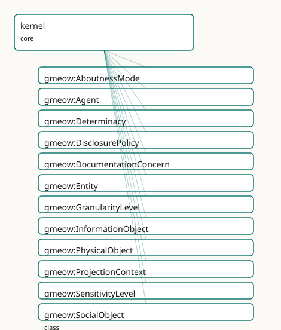

GMEOW Core Module
- IRI: https://blackcatinformatics.ca/gmeow/slices/kernel
- Tier: core
Group: core
What This Slice Covers
This slice owns 73 terms and contributes 78 mapping or projection rows. Use it when its terms match the native fact you want to preserve; use the linkage tables to see how those facts leave GMEOW for consumer vocabularies.
Consumers
- Every slice: the gUFO-grounded kernel (
Entity,Agent,InformationObject, base relations).
Local Map

Terms
Classes
| Term | Label | Definition |
|---|---|---|
gmeow:AboutnessMode |
Aboutness Mode | The rhetorical relation between an information carrier and its subject matter — whether the carrier describes the subject (mention: reporting, quoting, depicti... |
gmeow:Agent |
Agent | An entity that can act, bear responsibility, and enter into agreements: a person, an organization, or a software agent. |
gmeow:Determinacy |
Determinacy | The model of ontic determinacy or indeterminacy for a value — whether it is inherently crisp, vague, fuzzy, probabilistic, or disputed. Distinct from epistemic... |
gmeow:DisclosurePolicy |
Disclosure Policy | The disclosure posture of a value or claim — an open value vocabulary of individuals (never subclasses) classifying whether and under what conditions the fact... |
gmeow:DocumentationConcern |
documentation concern | A cross-cutting documentation theme generated into its own guide page. Terms opt into a concern with gmeow:docsConcern so adoption-oriented docs are ontology-b... |
gmeow:Entity |
Entity | Anything in the GMEOW universe of discourse that persists in time and can bear properties: an agent, a document, a contact point, and so on. |
gmeow:GranularityLevel |
Granularity Level | A level of detail / resolution at which a value is expressed — a point on an open, ordered, domain-general axis (spatial: point ≺ address ≺ city ≺ region ≺ cou... |
gmeow:InformationObject |
Information Object | An entity whose nature is to carry information content: a document, dataset, software artifact, online account, or message. The shared parent of the document,... |
gmeow:PhysicalObject |
Physical Object | An entity that is a material thing occupying space and time — a device, instrument, vehicle, building, or natural body. Distinct from Agent (which acts and bea... |
gmeow:ProjectionContext |
Projection Context | The consumer or audience for which a fact is eligible to be projected — an open value vocabulary of individuals (never subclasses). Names downstream targets su... |
gmeow:SensitivityLevel |
Sensitivity Level | A privacy-sensitivity classification for a value — an open, ordered value vocabulary (public ≺ internal ≺ confidential ≺ restricted ≺ sensitive personal). The... |
gmeow:SocialObject |
Social Object | An entity that exists by virtue of social convention, collective acceptance, or sustained narrative practice — a myth, an urban legend, an agreement, a standpo... |
Properties
| Term | Label | Definition |
|---|---|---|
gmeow:avoidForConsumer |
avoid for consumer | Term-level advisory metadata naming downstream ProjectionContext individuals for which the annotated ontology construct is normally too detailed, too lossy, or... |
gmeow:avoidWhen |
avoid when | Term-level advisory metadata naming conditions in which a class, property, individual, or slice-level construct should not be used, or should be promoted to a... |
gmeow:coarsenGuarded |
coarsen guarded | Marks a property as PRECISION-BEARING for disclosure control (CONSTITUTION P10): when a projection branch reads this property of a subject, the mapping c... |
gmeow:coarsenTo |
coarsen to | Disclosure control: marks a value/relator so that at projection time it is generalized to no finer than the named gmeow:GranularityLevel — a coarser ancestor i... |
gmeow:coarserThan |
coarser than | Orders the granularity axis: relates a granularity level to a finer level it generalizes (country gmeow:coarserThan city). Transitive; the partial order that m... |
gmeow:coequalFacet |
co-equal facet | Marks a property as one co-equal identity-facet axis among peers (CONSTITUTION P9). Every property annotated coequalFacet true is held orthogonal to ever... |
gmeow:connectsTo |
connects to | Universal traversable-link relation: relates any GMEOW thing to another thing it is directly connected to in a graph, network, or path. Intentionally broad; us... |
gmeow:docsConcern |
documentation concern link | Links a term, slice, or documentation-bearing resource to a gmeow:DocumentationConcern. Used only by documentation projections; it carries no logical semantics... |
gmeow:eligibleForConsumer |
eligible for consumer | Relates a value, entity, or claim to the projection consumers it is eligible for — the explicit who facet of disclosure control. Domain-free (universal, like... |
gmeow:frameCardinality |
frame cardinality | Optional cardinality override for a gmeow:requiresFrame declaration: "exactly-one" or "at-least-one". Absent, the cardinality is derived from the frame propert... |
gmeow:frameRequirementSeverity |
frame requirement severity | Optional severity for a gmeow:requiresFrame declaration: "warning" downgrades the generated frame-relativity shape from sh:Violation to sh:Warning (used while... |
gmeow:generalizesVia |
generalizes via | Projection-compiler guidance naming the transitive part/whole property to walk when coarsening a value (e.g. gmeow:containedInPlace for places). Defaults to gm... |
gmeow:guideBlob |
guide blob | Links a slice to the content-addressed digest of its Tier-2 narrative guide as embedded in a GTS package: the guide rides the same file as the ontology,... |
gmeow:hasAboutness |
has aboutness | Relates an information carrier (a document, span, segment, citation act, exemplar, or statement via the statement layer) to its aboutness mode — the explicit f... |
gmeow:hasDeterminacy |
has determinacy | Relates a value, entity, or claim to its ontic determinacy model — the explicit facet recording whether the value is crisp, vague, fuzzy, probabilistic, or dis... |
gmeow:hasDisclosurePolicy |
has disclosure policy | Relates a value, entity, or claim to its disclosure policy — the explicit what facet of disclosure control. Domain-free (universal, like hasGranularity and h... |
gmeow:hasGranularity |
has granularity | Relates a value, place, period, coordinate or measurement to its own resolution level — the explicit 'no silent precision' facet, queryable independently of an... |
gmeow:hasPart |
has part | Universal whole-to-part inverse of gmeow:partOf. Transitive and intentionally broad; specialized component and containment properties remain the authoritative... |
gmeow:hasSensitivity |
has sensitivity | Relates a value, entity, or claim to its privacy-sensitivity level — the explicit facet that drives disclosure-control decisions (coarsenTo / displayable) at p... |
gmeow:hasUnit |
has unit | Relates a quantitative value or measurement to its QUDT unit (by reference, never imported). Domain-free: used by temporal measurements, spatial measurements,... |
gmeow:howToUse |
how to use | Term-level advisory metadata carrying a short modeling recipe for the HOW facet: the companion properties, relators, statement metadata, or projection checks t... |
gmeow:namingNote |
naming note | An explicit justification for a term local name that the primary/preferred/default/main naming lint (CONSTITUTION P9) would otherwise reject. Legitimate... |
gmeow:pairsWith |
pairs with | Links the two halves of a flat-first/reify-on-demand pair — the flat shortcut and the reified relator that carries the same relationship when period, role, con... |
gmeow:partOf |
part of | Universal part-to-whole relation: relates any GMEOW thing to a larger whole it is part of. Transitive and intentionally broad; use specialized subproperties su... |
gmeow:requiresFrame |
requires frame | Declares that every instance of the annotated class must carry the named reference-frame property (CONSTITUTION P11): 'a value asserted without its frame... |
gmeow:useForConsumer |
use for consumer | Term-level advisory metadata naming downstream ProjectionContext individuals for which the annotated ontology construct is normally appropriate. This is docume... |
gmeow:useWhen |
use when | Term-level advisory metadata naming the modeling situation in which a class, property, individual, or slice-level construct should be used. A narrower, machine... |
Individuals
| Term | Label | Definition |
|---|---|---|
gmeow:aboutnessDescribes |
describes | The describing (mention) aboutness mode — the carrier reports, quotes, depicts, defines, or analyzes its subject without performing it. Source material about a... |
gmeow:aboutnessEnacts |
enacts | The enacting (use) aboutness mode — the carrier performs, demands, exemplifies, or embodies its subject rather than merely reporting it. A style guide whose pr... |
gmeow:concernDisclosure |
disclosure and suppression | Projection-time withholding, coarsening, sensitivity, and display control. |
gmeow:concernFrames |
frames and units | Reference frames, units, determinacy, granularity, and frame-relative values. |
gmeow:concernGTSPackaging |
GTS packaging | The single-file Graph Transport Substrate and bundled documentation distribution. |
gmeow:concernIdentifiersCoreference |
identifiers and coreference | External authority links, identifier records, and reference-only bridging. |
gmeow:concernProvenanceEvidence |
provenance and evidence | Attribution, derivation, confidence, evidence, and source lineage. |
gmeow:concernStandpoints |
standpoints | Perspective-indexed claims without primary, preferred, or winner slots. |
gmeow:concernStatementMetadata |
statement metadata | Native RDF 1.2 reifiers, statement annotations, confidence, provenance, and temporal scope. |
gmeow:consumerAgentMemory |
agent memory | The consumer is an AI agent's working memory or retrieval store. |
gmeow:consumerFoafExport |
FOAF export | The consumer is a FOAF/RDF social-graph export. |
gmeow:consumerInternalArchive |
internal archive | The consumer is an internal archival system — not publicly visible. |
gmeow:consumerPublicSite |
public site | The consumer is a public-facing website or application. |
gmeow:consumerResearchQueue |
research queue | The consumer is a human-curated research or verification queue. |
gmeow:consumerSchemaOrgJsonLd |
schema.org JSON-LD | The consumer is a schema.org JSON-LD markup export. |
gmeow:consumerWikidata |
Wikidata | The consumer is Wikidata — a structured, editable knowledge base. |
gmeow:consumerWikipedia |
Wikipedia | The consumer is Wikipedia — an encyclopedic article. |
gmeow:determinacyCrisp |
crisp | The crisp determinacy — a characterization of whether a value is crisp, vague, fuzzy, probabilistic, or disputed (Principle 9). |
gmeow:determinacyDisputed |
disputed | The disputed determinacy — a characterization of whether a value is crisp, vague, fuzzy, probabilistic, or disputed (Principle 9). |
gmeow:determinacyFuzzy |
fuzzy | The fuzzy determinacy — a characterization of whether a value is crisp, vague, fuzzy, probabilistic, or disputed (Principle 9). |
gmeow:determinacyProbabilistic |
probabilistic | The probabilistic determinacy — a characterization of whether a value is crisp, vague, fuzzy, probabilistic, or disputed (Principle 9). |
gmeow:determinacyVague |
vague | The vague determinacy — a characterization of whether a value is crisp, vague, fuzzy, probabilistic, or disputed (Principle 9). |
gmeow:policyInternalOnly |
internal only | The fact must never leave internal systems. |
gmeow:policyNeverPublic |
never public | The fact must never be projected to any public consumer — private-sourced or otherwise restricted. |
gmeow:policyPublicCareful |
public careful | The fact may be public but warrants caution — check context and consent before projecting. |
gmeow:policyPublicOnlyWithIndependentSource |
public only with independent source | The fact may be projected to public consumers ONLY when supported by an editorially independent source (resolved against gmeow:sourceIndependence in the solver... |
gmeow:policyPublicSafe |
public safe | The fact is safe for broad public projection without additional review. |
gmeow:policySensitive |
sensitive | The fact is sensitive and requires case-by-case review before any projection. |
gmeow:sensitivityConfidential |
confidential | The confidential sensitivity level — information whose unauthorized disclosure could harm an organization or individual. |
gmeow:sensitivityInternal |
internal | The internal sensitivity level — information intended for use within an organization or trusted circle. |
gmeow:sensitivityPublic |
public | The public sensitivity level — information that may be disclosed without restriction. |
gmeow:sensitivityRestricted |
restricted | The restricted sensitivity level — information whose access is limited to named individuals or roles under explicit authorization. |
gmeow:sensitivitySensitivePersonal |
sensitive personal | The sensitive personal sensitivity level — information about a person whose disclosure carries elevated risk and may be subject to legal protection or consent... |
Datatypes
| Term | Label | Definition |
|---|---|---|
gmeow:markdown |
markdown | The CommonMark literal datatype — documentation content carried in the graph is CommonMark, typed with this datatype so the convention is machine-visible (... |
Linkages
- Rows: 78
- Projection profiles:
crmarchaeo,dcat,dcterms,geosparql,oai_dc,schema-org,vcard - External vocabularies:
bfo,crm,crmarc,dc,dcat,dcmitype,dcterms,dpv,foaf,geo,gufo,ladm,odrl,om,prov,qudt,rdf,schema,skos,sosa,vcard,wd
| Source | Kind | Profile | Predicate/Relation | Target | Evidence |
|---|---|---|---|---|---|
gmeow:Agent |
equivalence | - |
owl:equivalentClass | foaf:Agent | gmeow-classes.sssom.tsv; gmeow:eqClasses007; confidence 1 |
gmeow:Agent |
equivalence | - |
skos:closeMatch | ladm:LA_Party | gmeow-places.sssom.tsv; gmeow:eqPlaces207; confidence 0.85 |
gmeow:Agent |
equivalence | - |
owl:equivalentClass | prov:Agent | gmeow-classes.sssom.tsv; gmeow:eqClasses008; confidence 0.95 |
gmeow:Agent |
equivalence | - |
skos:relatedMatch | sosa:Platform | gmeow-observations.sssom.tsv; gmeow:eqObs031; confidence 0.75 |
gmeow:Agent |
equivalence | - |
skos:broadMatch | sosa:Sensor | gmeow-observations.sssom.tsv; gmeow:eqObs018; confidence 0.75 |
gmeow:Agent |
equivalence | - |
skos:closeMatch | wd:Q24229398 | gmeow-wikidata.sssom.tsv; gmeow:eqWikidata053; confidence 0.7 |
gmeow:Determinacy |
equivalence | - |
skos:relatedMatch | bfo:BFO_0000019 | gmeow-determinacy.sssom.tsv; gmeow:eqDeterminacy002; confidence 0.5 |
gmeow:Determinacy |
equivalence | - |
skos:closeMatch | gufo:QualityValue | gmeow-determinacy.sssom.tsv; gmeow:eqDeterminacy001; confidence 1 |
gmeow:DisclosurePolicy |
equivalence | - |
skos:relatedMatch | dpv:ProcessingContext | gmeow-privacy.sssom.tsv; gmeow:eqPrivacy018; confidence 0.75 |
gmeow:DisclosurePolicy |
equivalence | - |
skos:relatedMatch | odrl:Policy | gmeow-privacy.sssom.tsv; gmeow:eqPrivacy019; confidence 0.7 |
gmeow:Entity |
equivalence | - |
skos:closeMatch | prov:Entity | gmeow-classes.sssom.tsv; gmeow:eqClasses046; confidence 0.7 |
gmeow:PhysicalObject |
equivalence | - |
skos:closeMatch | crm:E19_Physical_Object | gmeow-archaeological-evidence.sssom.tsv; gmeow:eqArch002; confidence 0.9 |
gmeow:PhysicalObject |
equivalence | - |
skos:closeMatch | dcmitype:PhysicalObject | gmeow-dublin-core.sssom.tsv; gmeow:eqDcType008; confidence 0.85 |
gmeow:ProjectionContext |
equivalence | - |
skos:relatedMatch | dpv:Recipient | gmeow-privacy.sssom.tsv; gmeow:eqPrivacy017; confidence 0.8 |
gmeow:SensitivityLevel |
equivalence | - |
skos:closeMatch | dpv:SensitivityLevel | gmeow-privacy.sssom.tsv; gmeow:eqPrivacy001; confidence 0.85 |
gmeow:SensitivityLevel |
equivalence | - |
skos:closeMatch | gufo:QualityValue | gmeow-privacy.sssom.tsv; gmeow:eqPrivacy002; confidence 1 |
gmeow:coarsenTo |
equivalence | - |
skos:closeMatch | dpv:Generalisation | gmeow-properties.sssom.tsv; gmeow:eqProperties055; confidence 0.8 |
gmeow:coarserThan |
equivalence | - |
skos:closeMatch | skos:broader | gmeow-properties.sssom.tsv; gmeow:eqProperties056; confidence 0.8 |
gmeow:consumerWikidata |
equivalence | - |
skos:closeMatch | wd:Q2013 | gmeow-privacy.sssom.tsv; gmeow:eqPrivacy023; confidence 1 |
gmeow:consumerWikipedia |
equivalence | - |
skos:closeMatch | wd:Q52 | gmeow-privacy.sssom.tsv; gmeow:eqPrivacy024; confidence 1 |
gmeow:determinacyDisputed |
equivalence | - |
skos:closeMatch | wd:Q18912752 | gmeow-determinacy.sssom.tsv; gmeow:eqDeterminacy006; confidence 0.8 |
gmeow:determinacyFuzzy |
equivalence | - |
skos:closeMatch | wd:Q1055058 | gmeow-determinacy.sssom.tsv; gmeow:eqDeterminacy003; confidence 0.9 |
gmeow:determinacyProbabilistic |
equivalence | - |
skos:closeMatch | wd:Q9492 | gmeow-determinacy.sssom.tsv; gmeow:eqDeterminacy005; confidence 0.9 |
gmeow:determinacyVague |
equivalence | - |
skos:closeMatch | wd:Q1411921 | gmeow-determinacy.sssom.tsv; gmeow:eqDeterminacy004; confidence 0.85 |
| ... | ... | ... | ... | ... | 54 more rows |
Guide
Kernel — the gUFO-grounded core and the universal axes
Slice:
https://blackcatinformatics.ca/gmeow/slices/kernel· tier: core The foundation every slice stands on: the sortal spine, the part/whole and link spines, and the domain-free facet axes.
Every GMEOW class subclasses a gUFO foundational category, and the kernel supplies the top of that spine plus everything that must exist before any domain slice can be honest: universal mereology and connectivity, the domain-free epistemic facets (Principle 9), the withhold-or-coarsen disclosure mechanism (Principle 10), and the compliance-by-construction annotations that turn Constitution principles into generated lints. Kernel properties omit domains and ranges where breadth is the point; heavy computation — reachability, geomasking, k-anonymity — is solver work (Principle 12).
The sortal spine and the universal relations
gmeow:Entity · gmeow:Agent · gmeow:InformationObject
Entity is the universe of discourse: anything persisting in time that can bear
properties (gufo:Endurant) — what makes the domain-free facets below attachable
anywhere. Agent acts, bears responsibility, and enters agreements. InformationObject
carries content — the shared parent of the document, software, account, and tag layers.
gmeow:PhysicalObject · gmeow:SocialObject
The material sortal (disjoint with Agent and InformationObject) and the
convention-sustained one (myths, agreements, standpoints). SocialObject is deliberately
not disjoint with InformationObject: a myth is both, and asserting false disjointness
would turn benign overlap into inconsistency (Principle 9).
gmeow:partOf · gmeow:hasPart · gmeow:connectsTo
The universal transitive part/whole spine and the traversable-link spine.
Domain properties (geographic containment, sub-organizations, spatial links, kinship,
citation edges) keep their exact meanings and specialize these so generic consumers can
ask for parthood or connectivity without collapsing semantics. No domain/range is
asserted; connectsTo is neither symmetric nor transitive, and reachability is solver
work (P12). Unit linkage (gmeow:hasUnit, QUDT by reference — Principle 5) lives here too.
The domain-free epistemic axes
Four orthogonal, domain-free, non-functional facets may attach to any value, entity, claim, or carrier. None subsumes another; none bridges to confidence or standpoint modality (Principle 9). Together with those two statement-layer properties they form the six-way matrix every projection consults:
| Axis | Property | Question it answers | Kind |
|---|---|---|---|
| Granularity | gmeow:hasGranularity |
At what resolution is this stated? | resolution |
| Determinacy | gmeow:hasDeterminacy |
How inherently defined is the value itself? | ontic |
| Sensitivity | gmeow:hasSensitivity |
What disclosure risk does it carry? | privacy |
| Aboutness | gmeow:hasAboutness |
Does the carrier describe its subject or enact it? | rhetorical |
| (Confidence) | gmeow:confidence |
How sure is the asserter? | epistemic |
| (Standpoint modality) | gmeow:standpointModality |
What belief value does the frame assign? | doxastic |
Aboutness is the mention/use distinction made first-class: a chunk
defining a trust framework describes trust; a covenant demanding trust
enacts it. Text about deception is not text that deceives. A carrier may
describe one subject while enacting another, and vantages may disagree via
the statement layer. Fiction is the licensed case where enactment co-occurs
with non-assertion — see the deception module's
veridicalityLicensedFalsehood (documented bridge; deliberately no axiom
coupling, so enactment never entails assertion).
External alignment is near-empty by survey, not by omission (search trail
from the parked wip-aboutness-349 branch, whose mapping set lands with the
compiler-arc work): the one settled Wikidata anchor is Q2577553
(use–mention distinction, analytic philosophy) — a loose relatedMatch for
the class, since the QID names the distinction, not a mode vocabulary. IAO's
is about (IAO_0000136) is aboutness-as-reference (what a carrier is about),
not aboutness-as-mode (what it does with it) — refused. schema.org, PROV-O,
CIDOC-CRM, DOLCE+DnS, and Web Annotation carry no mention/use mode property;
the seed individuals have no settled QIDs and stay unaligned rather than
force weak matches (Principle 5).
gmeow:hasGranularity · gmeow:hasDeterminacy
The "no silent precision" axis and the ontic axis. gmeow:GranularityLevel values are an
open, ordered vocabulary of individuals (never per-level subclasses), ordered by the
transitive gmeow:coarserThan and skos:exactMatch-aligned to OWL-Time and ISO 19112.
gmeow:Determinacy records whether a value is inherently crisp, vague, fuzzy,
probabilistic, or disputed — held strictly apart from epistemic confidence. Both are NOT
functional: in a merge competing claims coexist (Principle 9); fuzzy math is solver (P12).
gmeow:hasSensitivity · gmeow:hasAboutness
The privacy axis — an open, ordered gmeow:SensitivityLevel vocabulary (public ≺
internal ≺ confidential ≺ restricted ≺ sensitive personal) that drives disclosure control
under a consent guard — and the rhetorical axis (gmeow:AboutnessMode: describes /
enacts). hasAboutness is uniquely an owl:AnnotationProperty: aboutness is routinely
asserted about statements, and the annotation form keeps the generated OWL downcast in
OWL 2 DL (Principle 3); the subject the mode holds toward is carried by the surrounding
construct, never inferred.
Disclosure control by projection (Principle 10)
gmeow:coarsenTo · gmeow:generalizesVia
Suppression (gmeow:displayable false → withhold) and generalization (coarsenTo → emit
a coarser ancestor, e.g. the enclosing city instead of exact coordinates) are one
mechanism: withhold or coarsen at projection time, never by deletion. Coarsening walks
the property named by generalizesVia (default gmeow:partOf) up to the target
granularity level; when both marks apply, withhold wins. Geomask math is solver-side (P12).
gmeow:eligibleForConsumer · gmeow:hasDisclosurePolicy
The who and what layers of disclosure control: the gmeow:ProjectionContext
targets a fact may reach (internal archive, agent memory, Wikidata, public site, …) and
its gmeow:DisclosurePolicy release posture. policyPublicOnlyWithIndependentSource
resolves against the evidence module's sourceIndependence in the solver layer (P12).
Both are domain-free and non-functional: competing claims coexist (Principle 9).
gmeow:coequalFacet · gmeow:requiresFrame · gmeow:coarsenGuarded
Compliance by construction: annotations with no logical semantics that declare
which invariants the toolchain must generate. coequalFacet puts a property under the
Principle 9 orthogonality lint (own range, no bridges between axes, never functional,
jointly disjoint ranges). requiresFrame generates the Principle 11 frame-relativity
SHACL shape, tunable via frameRequirementSeverity and frameCardinality.
coarsenGuarded marks precision-bearing properties so the compiler injects coarsen
guards into every generated projection; gmeow:namingNote records the
lint-visible justification for a legitimately primary-style value-vocabulary name.
Documentation doctrine
gmeow:pairsWith · gmeow:useWhen · gmeow:howToUse · gmeow:guideBlob
Docs ship with the ontology in three tiers (Principle 4): term docs are canonical in
the graph; narrative guides are canonical markdown whose ### gmeow:Term anchors resolve
against the graph or the build fails, riding the GTS package as content-addressed blobs
linked by guideBlob (trustworthy from the hash chain alone — Principle 7). pairsWith
makes the flat-first/reify-on-demand pairing machine-usable: flat shortcut → reified
relator (gmeow:hasTag ↔ gmeow:Tagging), rendered by gmeow describe from structure,
never a logical bridge (Principle 12). Documentation literals are CommonMark typed
gmeow:markdown; HTML/SGML subsets are rejected.
Advisory term metadata splits generic scope prose into machine-readable WHEN/HOW/WHERE
facets. gmeow:useWhen and gmeow:avoidWhen are narrower skos:scopeNotes;
gmeow:howToUse carries the short modeling recipe; gmeow:useForConsumer and
gmeow:avoidForConsumer point to declared gmeow:ProjectionContext individuals so
describe, generated docs, and projection tooling can say which consumers a construct is
meant for without turning that advice into logical entailment.
The kernel depends on nothing and is depended on by every slice; whatever computation it names is solver work (Principle 12) — the kernel models the axes, tooling evaluates them.